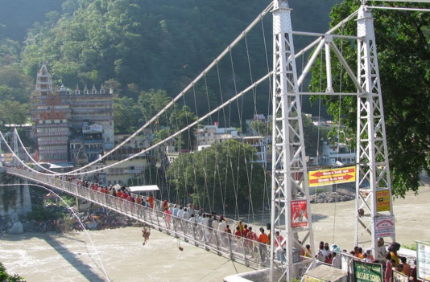
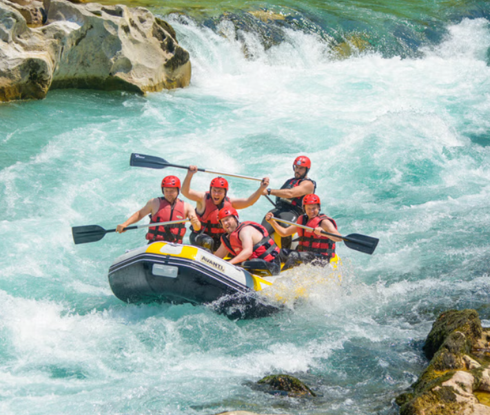

DESTINATION : RISHIKESH
Rishikesh is a spiritual and adventure hub in Uttarakhand, nestled in the Himalayas along the Ganga. It’s globally renowned as the “Yoga Capital of the World” and a gateway to adventure in northern India.
TOP ATTRACTIONS
- Laxman Jhula & Ram Jhula
- Triveni Ghat
- Neelkanth Mahadev Temple
- The Beatles Ashram
- Gucchupani Caves
Laxman Jhula

Ram Jhula

WEATHER INFORMATION
- Best Time: October to April for pleasant weather.
- Summers (March–June): Warm and dry, perfect for rafting.
- Monsoons (July–September): Scenic but risky for adventure activities.
- Winters (October–February): Cool and ideal for yoga retreats.
LOCAL CUISINE
Must-Try Dishes: Momos, Chotiwala Thali, and Pahadi Maggi.
Visit cafes like German Bakery, Ganga View Cafe, and Freedom Cafe for scenic meals.
ACTIVITIES AND ADVENTURE
Below mentioned are few of the activities which are popular in Rishikesh
| Sr No. | Activity | Description | Tips | Image |
|---|---|---|---|---|
| 1 | River Rafting | White-water rafting on the Ganga with rapids ranging from Grade 2 to 4. | Wear appropriate gear; follow guide instructions. Avoid during the monsoon season. |  |
| 2 | Bungee Jumping | Experience a thrilling freefall from India’s highest bungee jump (83 meters) at Mohan Chatti. | Ensure you meet the age, weight, and health criteria. Book slots in advance. | |
| 3 | Camping | Riverside camps with bonfires, stargazing, and serene mountain views. | Pack warm clothes for chilly nights; choose eco-friendly campsites. | |
| 4 | Trekking | Explore trails like Neer Garh Waterfalls, Kunjapuri Temple, and Patna Waterfall. | Wear sturdy hiking shoes; carry water and light snacks. | |
| 5 | Ziplining | Glide across the Ganga for panoramic views of the river and surrounding hills. | Wear comfortable clothes and avoid carrying loose items. |
MAPS AND NAVIGATION
CONTACT INFORMATION
Tourism Office: +91 135 2559987 Website: Visit Uttarakhand Tourism
Adventure Bookings: +91 78303 47771 Website: Visit Jumpin Heights
Accommodation Help: +91 135 243 5243 Website: Visit Ganga Kinare